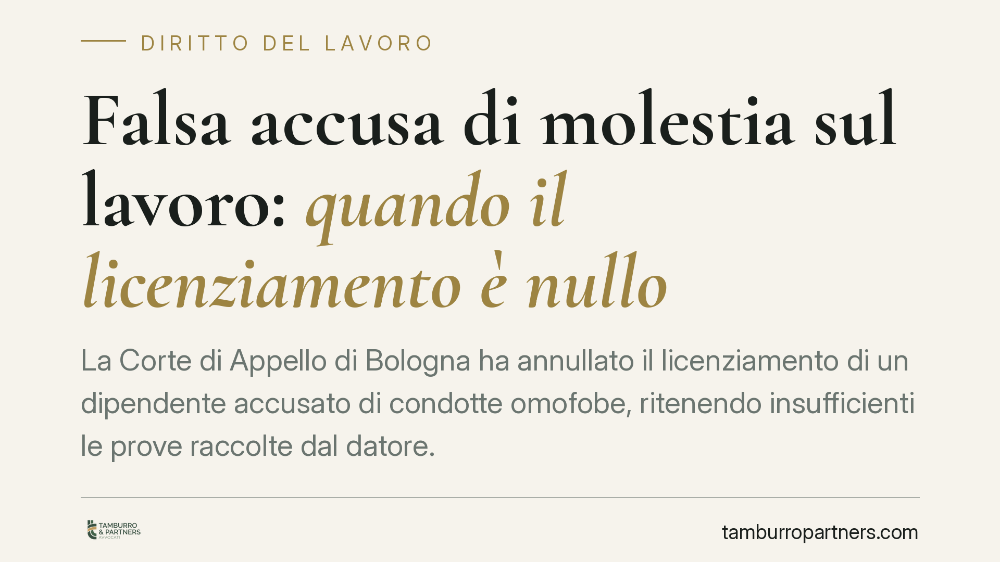

Falsa accusa di molestia sul lavoro: quando il licenziamento è nullo
La Corte di Appello di Bologna ha annullato il licenziamento di un dipendente accusato di condotte omofobe, ritenendo insufficienti le prove raccolte dal datore. La decisione ribadisce che il recesso disciplinare richiede fatti oggettivi e verificabili, non semplici percezioni o dichiarazioni non riscontrate. In gioco ci sono i limiti del potere direttivo e il valore dei verbali penali nel giudizio civile.

Il caso
Un lavoratore viene accusato da un collega di avere tenuto comportamenti a sfondo omofobo. L'azienda avvia il procedimento disciplinare e procede al licenziamento. Il dipendente impugna il recesso e, in appello, ottiene ragione.
La Corte di Appello di Bologna annulla il licenziamento perché il datore di lavoro non ha fornito prove oggettive dei fatti contestati. Le dichiarazioni del denunciante, prive di riscontri esterni, non bastano a sorreggere una sanzione così grave.
Inquadramento normativo
Il principio guida è consolidato: chi licenzia deve provare i fatti posti a fondamento del recesso. Non spetta al lavoratore dimostrare la propria innocenza. È il datore che deve dare prova certa dell'inadempimento contestato.
La Cassazione, con la sentenza n. 2436/2019, ha ribadito che la giusta causa di licenziamento presuppone fatti gravi e concretamente accertati, non meri sospetti. Con la sentenza n. 5317/2017 la Corte ha chiarito il regime di utilizzabilità dei verbali penali nel processo civile: gli atti raccolti in sede penale (come i verbali di sommarie informazioni) possono confluire nel giudizio del lavoro, ma vanno liberamente valutati dal giudice civile, che non è vincolato agli esiti penali e deve verificarne l'attendibilità nel contraddittorio tra le parti.
In altre parole: un verbale non è una prova "automatica". È un elemento che il giudice del lavoro pesa insieme agli altri, potendo giungere a conclusioni diverse rispetto al procedimento penale.
Cosa significa in concreto
La sentenza traccia un confine netto al potere direttivo e disciplinare dell'azienda. Il datore ha certamente il dovere di prevenire e reprimere condotte discriminatorie sul luogo di lavoro: la tutela contro molestie e comportamenti omofobi è un obbligo, non una facoltà. Ma la reazione sanzionatoria deve poggiare su un accertamento serio.
Un'accusa, per quanto delicata sul piano dei valori, non si trasforma da sola in giusta causa. Servono riscontri: testimonianze convergenti, documenti, elementi materiali. La percezione soggettiva del denunciante, se isolata, non regge il vaglio giudiziale.
Questo vale in entrambe le direzioni. Da un lato protegge il lavoratore da licenziamenti fondati su versioni non verificate. Dall'altro impone all'azienda un'istruttoria rigorosa, che non può essere frettolosa neppure di fronte a contestazioni gravi.
### Il rischio dell'istruttoria affrettata
Di fronte ad accuse che toccano temi sensibili, l'azienda può essere tentata di reagire con durezza per tutelare il clima interno e la propria immagine. È comprensibile, ma pericoloso. Un licenziamento privo di solide basi probatorie espone il datore all'annullamento del recesso, con reintegrazione o indennità risarcitoria, oltre al danno reputazionale del contenzioso perso.
La raccolta delle prove va condotta con metodo: audizioni verbalizzate, contraddittorio effettivo con l'incolpato, valutazione di eventuali testimoni, verifica della coerenza delle dichiarazioni nel tempo.
Cosa fare in concreto
Per le aziende:
- Formalizzate ogni fase dell'istruttoria disciplinare con verbali datati e sottoscritti, garantendo il contraddittorio all'incolpato.
- Non fondate il licenziamento su una sola dichiarazione: cercate riscontri oggettivi prima di procedere.
- Distinguete l'esito del procedimento penale da quello disciplinare: sono binari autonomi, valutate le prove in sede propria.
Per i lavoratori:
- Chiedete copia integrale della contestazione disciplinare e presentate per iscritto le vostre giustificazioni nei termini.
- Conservate ogni elemento utile a ricostruire i fatti (messaggi, mail, nominativi di eventuali presenti).
- Impugnate il licenziamento entro sessanta giorni dalla comunicazione, per non decadere dal diritto di contestarlo.
La vicenda bolognese conferma un equilibrio: fermezza contro le condotte discriminatorie, ma solo entro il perimetro di un accertamento probatorio credibile. Il valore tutelato non giustifica scorciatoie sul piano delle prove.
Disclaimer
Contributo informativo a cura di Tamburro & Partners - Avv. Giuseppe Tamburro. Non costituisce parere legale.
Ogni storia di lavoro ha i suoi tempi.
Se gestisci HR e vuoi un confronto su contenzioso, ispezioni o licenziamenti, scrivi allo studio. Ti rispondiamo entro un giorno lavorativo.